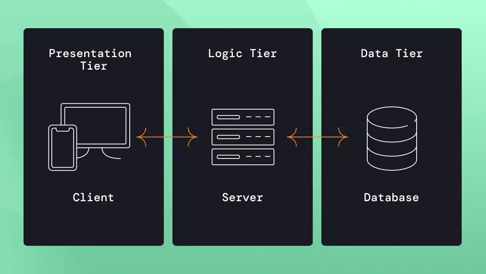

Multifier architecture refers to a multi-tier or multi-layered system design commonly used in enterprise web applications.
Common layers: Presentation Layer (UI), Application Layer (business logic), Data Layer (database).